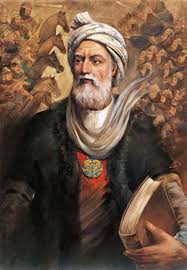
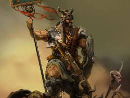
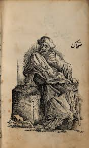
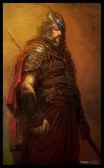

یکی از بزرگترین شاعران تاریخ ایران و سراینده شاهنامه است. او حدود سی سال از عمر خود را صرف سرودن شاهنامه کرد تا تاریخ، فرهنگ و زبان فارسی را زنده نگه دارد. شاهنامه با بیش از پنجاه هزار بیت، یکی از ارزشمندترین آثار ادبی جهان به شمار میرود و نقش مهمی در حفظ زبان فارسی داشته است. فردوسی با خلق این اثر جاودانه، نام خود را برای همیشه در تاریخ و فرهنگ ایران ماندگار کرد.

رستم بزرگترین پهلوان شاهنامه و یکی از نامدارترین قهرمانان تاریخ و ادبیات ایران است. او فرزند زال و رودابه بود و به نیروی فراوان، شجاعت و وفاداری شهرت داشت. رستم در طول زندگی خود در نبردهای بسیاری از ایران دفاع کرد و کارهای بزرگی انجام داد. داستان هفتخان رستم و نبرد او با دشمنان از مشهورترین بخشهای شاهنامه هستند. رستم نماد پهلوانی، فداکاری و عشق به میهن است.

ضحاک یکی از مشهورترین شخصیتهای شاهنامه و نماد ظلم و ستم است. بر اساس داستانهای شاهنامه، بر شانههای او دو مار روییده بود که برای زنده ماندن به مغز جوانان نیاز داشتند. دوران حکومت ضحاک با رنج و سختی مردم همراه بود تا اینکه سرانجام فریدون علیه او قیام کرد و به حکومت ستمگرانهاش پایان داد. داستان ضحاک نمادی از مبارزه خیر با شر است.

سیاوش یکی از پاکترین و محبوبترین شخصیتهای شاهنامه است. او فرزند کیکاووس بود و به درستکاری، شجاعت و وفاداری شهرت داشت. سیاوش برای اثبات بیگناهی خود از میان آتش گذشت و سالم بیرون آمد. داستان زندگی او نمادی از پاکی، عدالت و مظلومیت است و یکی از غمانگیزترین روایتهای شاهنامه به شمار میرود.
«بسی رنج بردم در این سال سی عجم زنده کردم بدین پارسی»